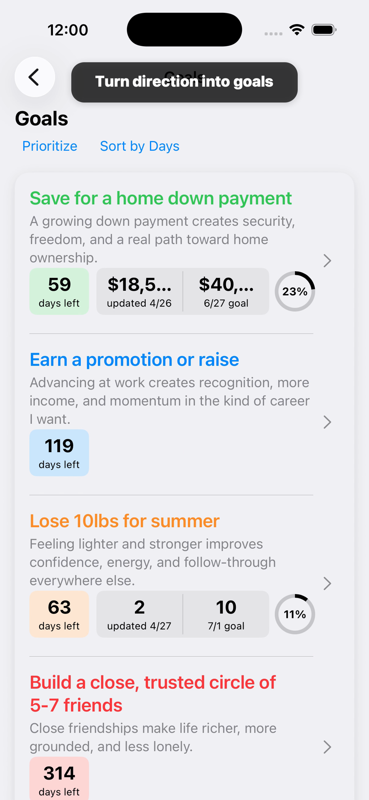
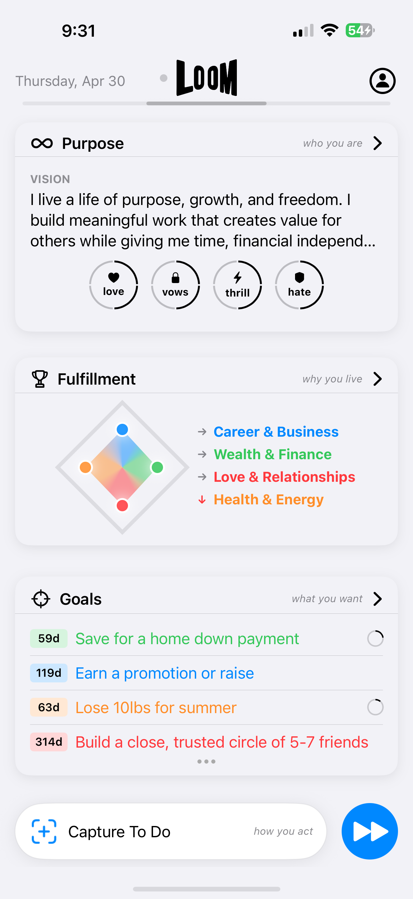
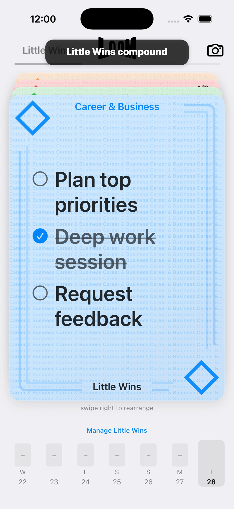

What to look for
- Define goals clearly enough to act on them.
- Connect goals to daily tasks and repeatable habits.
- Review progress across life areas.
- Use AI support when the next step is unclear.
A goal written in notes is easy to forget. A goal buried in a task app can become just another project. Loom is built to connect goals to the practical actions, habits, and reflections that make progress visible.

Loom goals connect backward to fulfillment areas and forward to Action Plans and Little Wins. That structure helps users move from ambition to daily progress without maintaining separate apps for goals, tasks, and habits.
For buyers comparing apps, the key question is whether you need one feature or a complete life-management system. This table shows where Loom is strongest.
| Buying criteria | Loom | Typical category app |
|---|---|---|
| Goal structure | LoomGoals sit inside a purpose and life-area system. | Typical appBasic goal trackers often focus on progress fields or reminders. |
| Daily action | LoomAction Plans turn goals into tasks with context. | Typical appMany goal apps require a separate task manager. |
| Habits | LoomLittle Wins make repeat progress visible. | Typical appHabits are often tracked somewhere else. |
| AI planning | LoomLoomAI can help create, refine, and prioritize next steps. | Typical appMany goal trackers leave planning fully manual. |
This page is for iPhone users searching for a goal planner app because goals keep stalling between intention and action. The practical choice is the app that turns ambition into tasks, habits, review, and visible progress.
A goal planner should make the next action obvious, not just store ambition. Loom is included here because it connects multiple layers that are usually split across separate apps: purpose, goals, tasks, habits, capture, reflection, health signals, and AI planning.
Do not judge a planning app by setup alone. Add one goal, one urgent task, one repeat habit, and one reflection. If the app helps you see how those pieces relate, it is more likely to survive real life after the first week.
The common mistake is choosing the app with the flashiest isolated feature while ignoring the full workflow. Fast capture does not guarantee goal progress. Habit streaks do not guarantee better priorities. Generic AI does not guarantee follow-through. The strongest app is the one that makes the whole loop easier to repeat when life is busy.
Loom stands out because the loop is already designed: define what matters, organize life areas, set goals, create Action Plans, repeat Little Wins, capture loose items, reflect, and use LoomAI when you need help finding the next step.


Choose Loom when the problem is bigger than storing information. Loom is the better fit when you want purpose, goals, tasks, habits, capture, reflection, health signals, and AI support in one repeatable iPhone workflow.
That is where Loom is strongest: for people with real responsibilities, personal ambition, and multiple life areas competing for attention.
Choose Loom when you want purpose, goals, tasks, habits, capture, reflection, health signals, and LoomAI working together instead of scattered across separate tools.